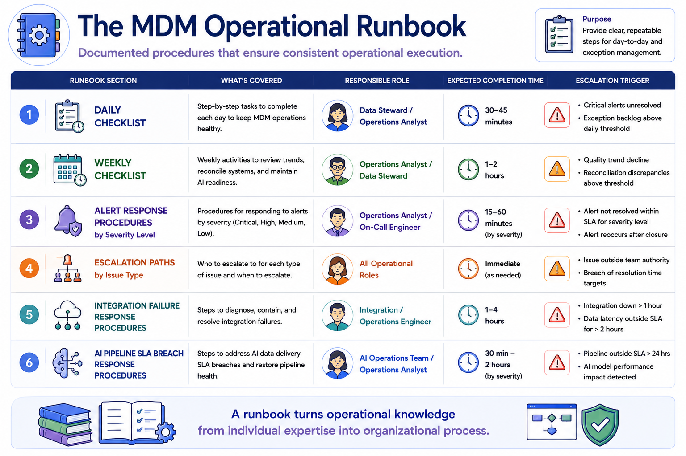
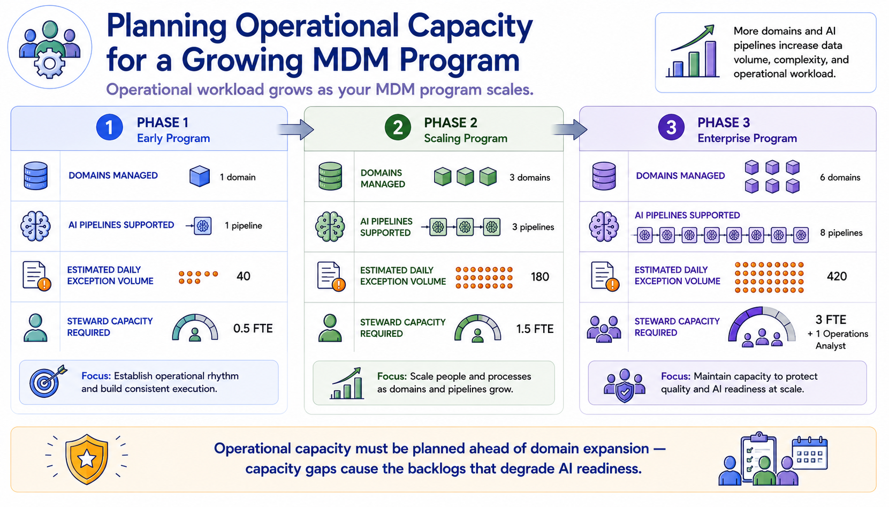
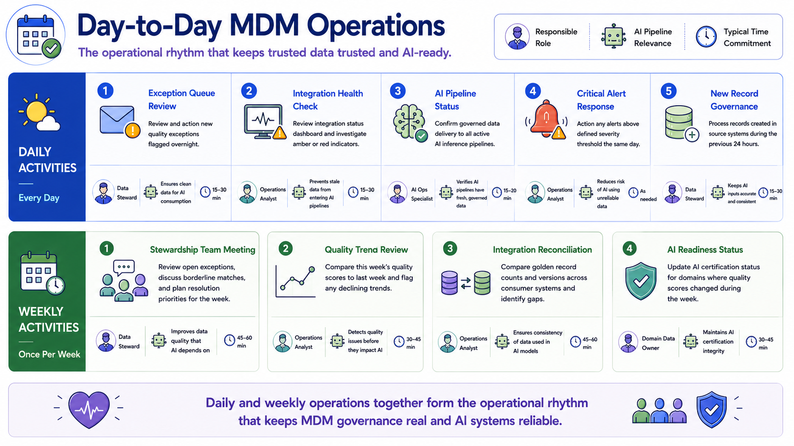

Day-to-Day Operations
Module support notes
Designing an Operational Runbook
An operational runbook is the document that makes MDM operations independent of any specific individual's knowledge. It specifies exactly what is done daily and weekly, who does it, how long it should take, what to do when something unexpected occurs, and who to escalate to at each severity level. Runbooks are particularly valuable during team transitions — when the person who ran operations during implementation hands off to the permanent operational team — because they capture the institutional knowledge that would otherwise exist only in one person's head.
For AI pipeline operations specifically, the runbook should include response procedures for each type of pipeline SLA breach, specifying when an AI model owner needs to be notified, when a model should be flagged for retraining review, and when a pipeline failure is severe enough to warrant suspending AI inference until the governed data supply is restored.
Tip
Build the runbook during implementation while the knowledge is fresh — not as a handoff artifact created in the final week. Every operational procedure that is executed during the pilot and rollout phases should be documented in real time. A runbook written after implementation from memory is incomplete. A runbook written during implementation from direct operational experience is actionable from day one of steady-state operations.

Operational Capacity Planning
Operational capacity planning is one of the most consistently underfunded aspects of MDM programs. Implementation teams focus on building the capability and frequently underestimate the operational headcount required to sustain it. When operational capacity is insufficient for the exception volume the program generates, backlogs accumulate, resolution times extend, and AI certification statuses fall behind — directly affecting the AI teams whose models depend on current certifications.
Planning operational capacity explicitly for each implementation phase, and securing that capacity before the phase begins rather than after the backlog has already formed, is the discipline that prevents the capacity crises that derail otherwise well-built MDM programs.
Warning
Operational capacity must be planned ahead of domain expansion — capacity gaps cause the backlogs that degrade AI readiness. A program expanding from one domain to three will see exception volume roughly triple. If steward capacity doesn't expand proportionally before the new domains go live, the backlog forms immediately and AI certification statuses begin to lag within weeks. Secure the capacity before the expansion, not after the backlog is already visible.

Daily and weekly operations together form the operational rhythm that keeps MDM governance real and AI systems reliable — cadence is what turns governance design into governance practice.
